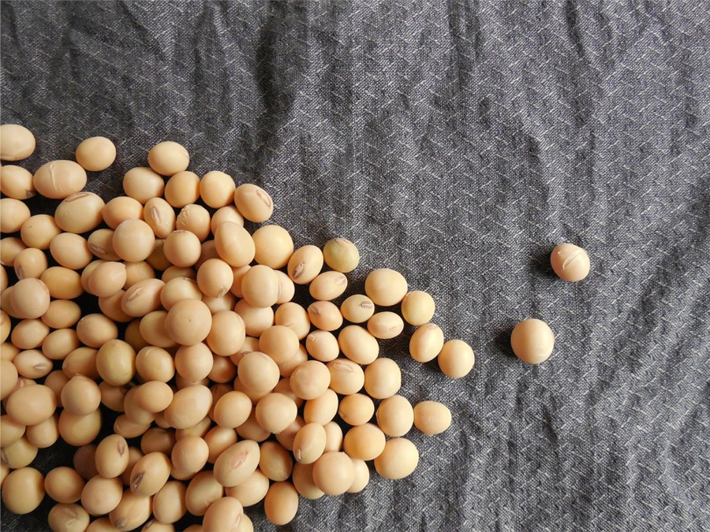
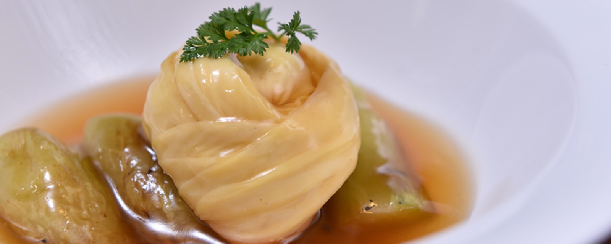
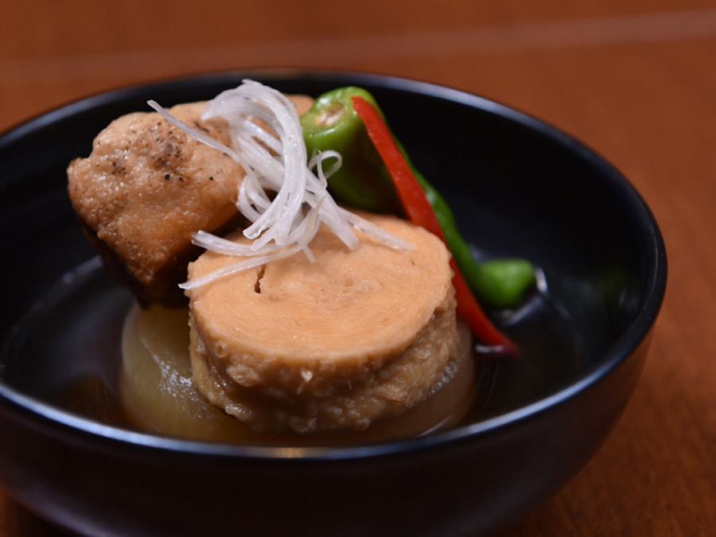
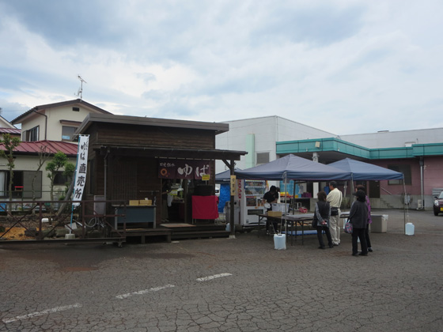

栃木県産の大豆
栃木県は那須連山・日光連山の豊かな水が肥沃な土壌を作り、大豆の収穫量は関東で茨城に次ぐ2位。その中から職人の目で厳選した大豆だけを使い、大豆本来の旨みを引き出します。

日光食品のこだわり

栃木県は那須連山・日光連山の豊かな水が肥沃な土壌を作り、大豆の収穫量は関東で茨城に次ぐ2位。その中から職人の目で厳選した大豆だけを使い、大豆本来の旨みを引き出します。
工場は世界遺産のまち・日光市。男体山をはじめ2000m級の山が連なる日光連山の、ミネラルバランスに優れた地下水でゆばを仕立てています。

日光のゆばは、山岳修行の僧たちの貴重な精進食に始まります。当時の製法を引き継ぎ、今も手作業。社内技術向上コンテストを定期開催し、技を磨き続けています。
お品書き
そのまま冷やして、煮物にして、ご飯に混ぜて。食べ方ごとにご用意しています。
このほか、さしみゆば・煮物用ゆば・ゆば加工品・ギフト詰め合わせ・手造りくんせいたまごなどをご用意しています。ギフトは贈答用に大変好評です。
お求め方法
受付は平日9:00〜17:00。ホームページ掲載の全商品をご注文いただけます。お支払いは代金後払い（コンビニ払い・請求書到着後14日以内、手数料550円）。
年中無休
本社敷地内の直売所で全商品をお求めいただけます。駐車場完備。年に数回の直売所セールも開催しています。
通販サイト
オンラインショップからもご注文いただけます。ご自宅用にも、お取り寄せの贈り物にも。
直売所

弊社の商品は、本社直売所でもお求めいただけます。年に数回の直売所セールでは、お得な商品を数多く取り揃え、お客様より大変ご好評をいただいています。開催時期はホームページ、下野新聞等で予めお伝えいたします。
よくあるご質問
本社直売所（栃木県日光市森友1513-27、駐車場完備・年中無休）でお求めいただけるほか、お電話（0288-22-7054、平日9:00〜17:00受付）でホームページ掲載の全商品をご注文いただけます。オンラインショップもございます。
よく冷やして、わさび醤油や酢醤油、そばつゆ、ドレッシングなどを掛けてお召し上がりください。トロっとした食感と濃厚な国産大豆の風味が特徴です。
お電話でのご注文は代金後払いがご利用いただけます。コンビニエンスストアにて請求書到着後14日以内にお支払いください（商品代金＋送料＋後払い手数料550円）。
さしみゆば、味付ゆばなどのお得な詰め合わせをご用意しており、贈答用に大変好評をいただいています。
年に数回開催しています。開催時期はホームページや下野新聞などで予めお伝えします。お得な商品を数多く取り揃え、ご好評をいただいています。
会社概要
株式会社日光食品を設立。10月、ゆば商品・玉子加工商品の加工を開始。
5S委員会 立ち上げ。
工場敷地内に直売店オープン。5月、経営戦略室・直売課 立ち上げ。
日光ブランド 食分野に認定。4月、全国土産審査会にて優秀な商品として認められる。
食品安全マネジメントシステム ISO 22000 を認証取得。
ホームページに載っている全商品を、お電話でご注文いただけます。